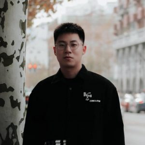

Hello, and welcome!
I am a Tenure-Track Assistant Professor in Microelectronics Thrust at The Hong Kong University of Science and Technology (Guangzhou) and a Cross-Campus Faculty Affiliate at The Hong Kong University of Science and Technology. Before that, I obtained my Ph.D degree in Computer Science from Rutgers University under the supervision of Prof. Sudarsun Kannan
Scalable AI, Systems, and Storage Laboratory (ScaleX Lab)
I am actively seeking several
self-motivated PhD students (2026 Fall/2027 Spring/2027 Fall), MPhils, RAs and one PostDoc to join my group. GPU programming and OS kernel experience is a big plus. If you are interested, please feel free to contact me with your CV and transcripts.
- Aug 2026 -- Three works (two papers and one poster) accepted to HotStorage 2026! Congrats Qi, Zecheng, Guanyi and the team!
- July 2026 -- Invited to serve on program committee for OSDI '27.
- June 2026 -- uGDS, the first open-source user-space GPU Direct Storage (GDS) library, was released. Give it a try and share your feedback!
- Mar 2026 -- CoPilotIO accepted to OSDI 2026! Congrats Guanyi and the team!
- Mar 2026 -- Invited to serve on program committee for ASPLOS '27.
- Sep 2025 -- Invited to serve on program committee for ASPLOS '26, EuroSys '26, FAST '26 and OSDI '26.
- Sep 2025 -- Joined HKUST(GZ) as a Tenure-Track Assistant Professor!
Research
My current researchs lie in operating system design and its intersection with storage systems, distributed systems, and high-performance computing.
Publications
CopyCat: Harvesting the Frequency Tax of Bulk Memory Copy
Zecheng Li, Jian Zhang
18th USENIX Workshop on Hot Topics in Storage and File Systems (HotStorage '26)
[To Appear]Bridging CPU and GPU I/O with a Device-Resident File System
Qi Chen, Guanyi Chen, Yujie Ren, Jian Zhang
18th USENIX Workshop on Hot Topics in Storage and File Systems (HotStorage '26)
[To Appear]Towards 100 Million IOPS for GPU-initiated I/O
Guanyi Chen, Zheng Zhou, Qi Chen, Jian Zhang
18th USENIX Workshop on Hot Topics in Storage and File Systems (HotStorage '26, Poster)
[To Appear]CoPilotIO: CPU as a Co-pilot for GPU I/O to Free GPU Compute
Guanyi Chen, Qi Chen, Shu Yin, Jian Zhang
The 20th USENIX Symposium on Operating Systems Design and Implementation (OSDI '26)
[paper] [code]Can a Client–Server Cache Tango Accelerate Disaggregated Storage?
Linjie Ma, Jian Zhang, Marie Nguyen, Sudarsun Kannan
17th USENIX Workshop on Hot Topics in Storage and File Systems (HotStorage '25)
[paper]PolyStore: Exploiting Combined Capabilities of Heterogeneous Storage
Yujie Ren, David Domingo, Jian Zhang, Paul John, Rekha Pitchumani, Sanidhya Kashyap, Sudarsun Kannan
23nd USENIX Conference on File and Storage Technologies (FAST '25)
[paper] [code]Context-aware Prefetching for Near-Storage Accelerators
Jian Zhang, Marie Nguyen, Sanidhya Kashyap, Sudarsun Kannan
16th USENIX Workshop on Hot Topics in Storage and File Systems (HotStorage '24)
[paper]CrossPrefetch: Accelerating I/O Prefetching for Modern Storage
Shaleen Garg*, Jian Zhang*, Rekha Pitchumani, Manish Parashar, Bing Xie, and Sudarsun Kannan (*co-first authors)
International Conference on Architectural Support for Programming Languages and Operating Systems (ASPLOS '24)
[paper] [code]OmniCache: Collaborative Caching for Near-storage Accelerators
Jian Zhang, Yujie Ren, Marie Nguyen, Changwoo Min, Sudarsun Kannan
22nd USENIX Conference on File and Storage Technologies (FAST '24)
[paper] [code]Enabling High-Performance and Secure Userspace NVM File Systems with the Trio Architecture
Diyu Zhou, Vojtech Aschenbrenner, Tao Lyu, Jian Zhang, Sudarsun Kannan, and Sanidhya Kashyap
29th ACM Symposium on Operating Systems Principles (SOSP '23)
Best Paper Award!
[paper] [code]Exploring CISCOps for Near-Storage File Systems
Jian Zhang, Yujie Ren, Sudarsun Kannan
14th annual non-volatile memories workshop (NVMW '23)
[paper]FusionFS: Fusing I/O Operations using CISCOps in Firmware File Systems
Jian Zhang*, Yujie Ren*, Sudarsun Kannan (*co-first authors)
USENIX Conference on File and Storage Technologies (FAST '22)
[paper] [code]CompoundFS: Compounding I/O Operations in Firmware File Systems
Yujie Ren, Jian Zhang, Sudarsun Kannan
12th USENIX Workshop on Hot Topics in Storage and File Systems (HotStorage '20)
[paper]BORA: A BAG Organizer for ROS Analysis
Jian Zhang, Tao Xie, Yuzhuo Jing, Yanjie Song, Guanzhou Hu, Shu Yin
International Conference for High Performance Computing, Networking, Storage and Analysis (SC '20)
[paper]
Group Members
- Guanyi Chen (2025 Fall)
- Qi Chen (2025 Fall)
- Zecheng Li (2025 Fall)
- Min Li (2026 Fall)
Experiences
- Reserach Intern, Adobe Research, San Jose, CA. (May.2025 - Aug. 2025)
- System Software Intern, Memory Solution Lab, Samsung, San Jose, CA. (May.2023 - Aug. 2023)
- System Software Intern, Memory Solution Lab, Samsung, San Jose, CA. (Jun. 2022 - Aug. 2022)
- Research Intern, Networking Research Group, Microsoft Research Asia, Beijing, China. (Jun. 2021 - Aug. 2021)
Services
- Program Committee: OSDI 2026-2027, ASPLOS 2026-2027, EuroSys 2026, FAST 2026
- Artifact Evaluation Committee: SOSP 2021, OSDI/ATC 2024
Contact
printf("%s@%s", "jianz", "hkust-gz.edu.cn") || printf("%s@%s", "jian", "sosp.dev") || printf("%s@%s", "jian.zj", "rutgers.edu") ;